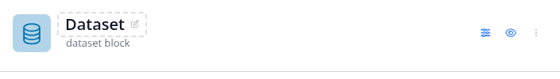
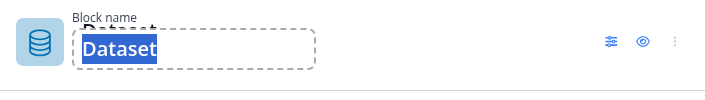
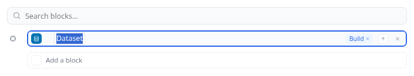
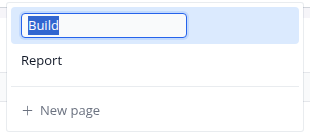
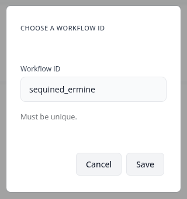
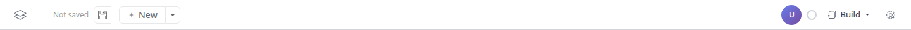
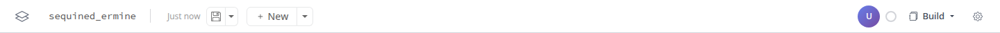

Two parts. First every place a name is edited in place, captured from a running board (blockr.outline
first-workflow, blockr.dock feat/simplified-mode, blockr.session): four places, four ways. Then the
navbar, read against the design system.


Block title (blockr.dock block_card_title()). Hover: a 2px dashed ring and a pencil. Click: a text
input with a 2px dashed border at the title's 20px. The input's own label ("Block name") shows above it and overlaps the
old title, which is a bug. Enter or blur commits.

Outline row (blockr.outline outline-rail.js). Double-click the name, or "Rename" in the row's menu:
the name becomes editable in place (contenteditable); the row takes a blue focus edge. No field look.

View name (blockr.dock view-binding.js). A pencil in the view menu swaps the name for a small input
(2px 6px, accent border, its own 2px ring). Empty and duplicate names are refused with a message.

Workflow (blockr.session). No rename: at the first save a modal asks for a "Workflow ID" (a generated one, "Must be unique"); after that the navbar shows the ID in monospace. The board's display name is a separate board option, set in Board options.
One look for every rename: block title, outline row, view name, and the workflow name if it becomes editable (Q3). Each option shows the title at rest, on hover, and while editing.
A. The text becomes a field
Hover: the hover wash. Editing: the decided field edge (accent border and focus ring), same size and weight as the text.
rest
Ozone above 40hover
Ozone above 40editing
Ozone above 40in a list row
B. Quiet in place
No box: a thin underline on hover, an accent underline while editing. The text does not move.
rest
Ozone above 40hover
Ozone above 40editing
Ozone above 40in a list row
C. Dashed ring (block title today)
A 2px dashed ring and a pencil on hover; the ring stays while editing.
rest
Ozone above 40 ✎hover
Ozone above 40 ✎editing
Ozone above 40in a list row
Today: one click on the block title, a double-click (or a menu item) on an outline row, a pencil in the view menu, nothing for the workflow.
A. Double-click, and "Rename" in the menu
Everywhere the same: double-click the name, or pick Rename in its "…" or row menu. A single click keeps its other job (select, open).
B. One click where the name has no other job
One click on the block title and the workflow name; double-click where a click selects (rows, tabs).
one click
C. A pencil
A small pencil next to every editable name, shown on hover, as the view menu does.
A. An ID, chosen at the first save (today)
A modal asks for a unique ID; the navbar shows it in monospace.
B. A name, edited in the navbar
A human name in the navbar ("Untitled workflow" until renamed), edited like any name (Q1, Q2). The ID is generated and never asked for; it is in the save menu, to copy.
C. Both in the navbar
The name, then the ID in muted monospace after it.
rack_name(),
rack_rename()), so this is a change to the navbar, not to storage. Runner-up: C.

Today, unsaved and saved (blockr.session project-navbar.css, blockr.dock blockr-dock.css): logo;
the workflow ID in monospace; "Not saved" / "Just now"; save as a split button; "+ New" as a split button; on the right an
avatar, a status circle, the view menu ("Build") and the board options gear.
Measured against the design system:
#333, #555, #999 and
hsl(220, 3%, …) greys, so it follows neither a theme nor the dark scheme. "Not saved" is #999, 2.8:1, below the text minimum.grey-300 (the strong border colour) instead of bg-hover.A. Today
As captured, on tokens only for the comparison.
B. On the system
30px throughout. Name editable (Q3), save state as text, one quiet "…" for save as, copy link and new; the view menu as a quiet button; accent-tint avatar.
C. On the system, with New visible
As B, plus a secondary "New" button, for boards where starting a new workflow is frequent.
bg-hover), which fixes the contrast of the save state and makes the navbar follow the dark scheme.